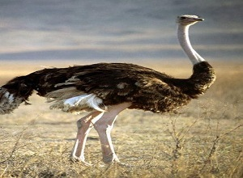
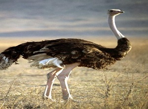

20 Ekim Dünya Tembel Hayvan Günü
Yaban hayatın en özel üyelerinden biri olan tembel hayvanların doğal yaşam alanı ve yaşam döngüsü hakkında bugün farkındalık sağlayabiliriz. Tembel hayvanlar, kaplumbağalardan bile daha yavaş hareket ederler. Bu yavaşlık onların hayatta kalması için oldukça önemlidir. Orta ve Güney Amerika’da yağmur ormanlarında yaşayan tembel hayvanlar hepçildir. Çoğunlukla güvende oldukları ağaç tepelerinde yaprakla beslenirler ve nadiren yere inerler. Besin değeri oldukça düşük ve sindirilmesi zor olan yapraklar ana besin kaynağını oluşturur. Fakat tembel hayvan çok düşük metabolizma ve vücut sıcaklığı ile bu özel koşullara uyum sağlamış durumdadır.
Kahverengi uzun tüyleri ile ağaç dallarında hareketsiz asılı durmaları bir tür kamuflaj görevi görür. Yinede bir yırtıcının tehdidi ile karşılaşırsa pençeleri caydırıcı olabilir. İnsan faaliyetleri karşısında tembel hayvanın pençeleri ne yazık ki kendisini koruyamıyor. Yasadışı hayvan ticareti ve avcılık tembel hayvan için büyük tehdit oluşturuyor. Dünya Doğa ve Doğal Kaynakları Koruma Birliği’nin kırmızı listesinde (IUCN Redlist) yer alan tembel hayvan, 2015 yılından bugüne parkımızda koruma altında yer alıyor. Tembel hayvan çiftimizin ilk yavruları 2018 yılında aramıza katılmıştı. Geçtiğimiz Eylül ayında ise çiftimizin 2. yavruları dünyaya geldi ve tembel hayvan ailesi büyümeyi sürdürdü.
Tembel hayvan çiftimizin yeni yavrusu aramıza katıldı
Tembel hayvan çiftimizin 2. yavrusu annesinin kucağından ayrılmadığı için henüz cinsiyet tayini yapılmadı. Yalnızca annesi izin verdiğinde sağlık kontrollerini yapabiliyor. Anne tecrübeleri sayesinde yavruyu çok iyi koruyor ve besliyor. Bu süreçte annenin diyetine vitamin takviyeleri ekledik ve en sevdiği yiyeceklere öğünlerinde daha fazla yer veriyoruz.
Kızıl panda yavrusu ilk kez bahçeye çıktı
Geçtimiz yıl doğan iki Kızıl panda yavrusu Jian ve Tara’dan sonra 25 Haziran 2021 tarihinde ailemize katılan erkek kızıl panda yavrusu 3 aylık olana kadar kışlık barınağında annesi ile birlikte kaldı. Bugün ilk kez annesi ile birlikte bahçeye çıkan yavru çevresini keşfetti. 3. ayını dolduran yavruyu bakıcı ve veteriner hekim kontrolünde barınakta yaşayan ailesinin diğer üyeleri ile tanışmasını sağlıyoruz. Doğumun hemen ardından anne ve yavrusu başbaşa kalıyor. Veteriner hekimlerimiz düzenli olarak Kızıl panda yavrusunun kilo takibi, vücut kondüsyonu ve benzeri sağlık kontrollerini gerçekleştiriyor. Yakında bahçede annesinin peşinde yürüme yollarını öğrenirken bambu kemirmeye çalışırken görebiliriz.
 
